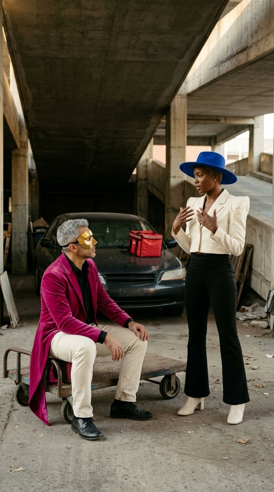
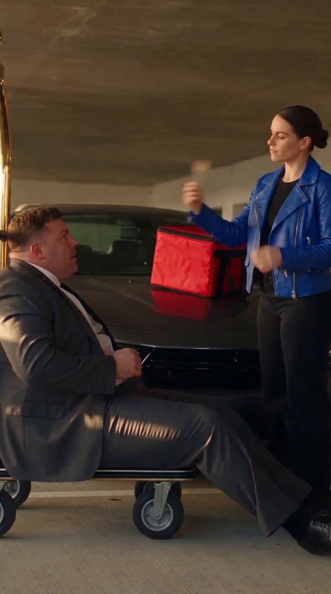
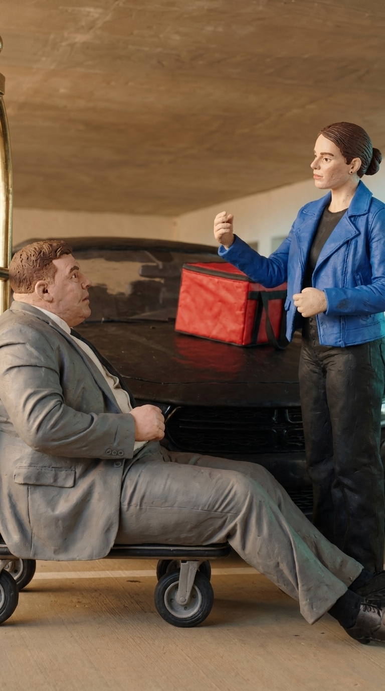

Cast the unexpected.
A cobalt hat and an ivory jacket. A gold mask and a magenta coat. Two new identities with unmistakably different silhouettes.
AI casting still.
The moving recast is pending verification.
Download the full image and exact prompt without an account. The casting guide also includes an editable three-format Brand Canvas project.


Earlier outfit-guidance test.
Compare the complete input and result from our earlier blue-jacket test. The jacket changes; movement, timing and other scene details vary. This earlier result is separate from the new casting still above.
With the $99 upfront pack of 100 credits.
Uses 1 credit per request. No subscription.
Compare billed input + output seconds, retakes and selected competitor plans. Competitor snapshots checked 6–7 November; our earlier quote is dated separately.
Review Genjutsu availability Get the earlier demo inputs
Opens Genjutsu. Choose + Upload my own video → Object swap, then open Output settings and choose 720p · 15s · Phone 9:16. Reference creation and extra takes cost more; review the quote and live capacity before buying.
Check the jacket during the opening block and the cherry at the cake reveal. Drag or choose a time to pause both clips at the same elapsed second. The shorter clip holds its final frame. Timing and movement differ.
Loading the comparison…
Use each player’s own controls for the full clip and sound; audio starts muted. Fictional AI adults, internal model tests.
Watch the 13-second source/result cut
The complete starter kit.
Our 14.9-second source MP4, actual blue-jacket JPG and successful prompt, with step-by-step instructions. Extract the ZIP before selecting the files in Studio.
Download demo inputs · 5.6 MB ZIPUse the MP4 path for this demo.
On November 3, Studio accepted both local input selections. Loading our owned YouTube film worked, but preparing its section failed to download. The included MP4 avoids that import step.
Preparing inputs starts no AI generation. Review the available route and full quote before buying or starting; this check does not establish current paid generation or delivery.


Save the image
Your clip. Your outfit. A new take.
- Sign in, then choose Genjutsu → + Upload my own video → Object swap.
Check the available models before selecting a reference. Add a source clip and a + Add your character, product or outfit image you own or have permission to use. Our input is 14.9 seconds, under the 15-second limit.
- Open Output settings. Choose 720p, 15s and Phone 9:16.
Open Prompt (optional) and paste the successful guided-scene prompt below. Describe the new scene and use the inputs as guidance.
- Choose audio and review the full quote.
Our earlier matching guidance quote used 1 credit; that budget route is under maintenance. Studio now lists alternatives with different prices. Our model test requested source audio. Review your selected mode, inputs and complete live quote before starting; motion, identity and audio synchronization can vary.
Earlier 720p rate: $0.99.
The earlier 15s/720p quote used 1 credit, allocating $0.99 from the $99 upfront pack of 100 credits. This budget route is under maintenance. Reference creation and extra takes cost separately.
Review the available alternativesCheck your workflow before buying.
The earlier one-credit starter cost $2.50 once. Available alternatives can require more credits.
The $0.99 allocation is a dated comparison, not a current checkout offer. Review the exact route, full quote and pack terms in Studio before purchasing.
Input selection checked 3 November 2026; listed credit rates are earlier snapshots from 25 October 2026. Our earlier request was 15 seconds; the complete received result is 15.072 seconds. Review the available route, current quote and capacity before buying or starting.
Inputs, footage and what changed
The original source was trimmed to 14.9 seconds to meet the input limit. Both players show their complete files. The result was requested at 720p for our internal Seedance 2.5 motion-guidance test and delivered at 720 × 1280 with audio; no local cuts or upscaling were added. Supplier internal generation resolution is not independently verified.
The blue-jacket appearance reference was made with Nano Banana PRO in Studio 2. The courier jacket changes; the fight, red bag, trolley and cake payoff remain recognizable. Timing and other details vary. An earlier edit-worded request failed without producing a video; the guided-scene prompt linked above produced this take.
This is our internal model demonstration, not a customer case or a production checkout/delivery test. The customer setting and price are separate from supplier credits. A matching quote does not guarantee a usable take.
Budget comparison: a separate 480p clay remake
This older style-transfer experiment trades resolution for a lower request allocation. It is separate from the 720p outfit-swap result above.


Save the image
Your clip. A look. A new take.
- Sign in, then choose Genjutsu → + Upload my own video → Restyle.
Check current availability first. Open Prompt (optional) and paste our actual style prompt below, or write your own. Use a clip and style image you own or have permission to use.
- Set 480p and 15 seconds.
Under Quality and duration choose 480p · 15s, then aspect ratio 9:16. Add one + Add a style reference image and one source video. Our source is 14.9 seconds, under the 15-second input limit.
- Review the full quote before starting.
Our earlier matching quote used 0.5 credit, Source video audio and $1.25 cash balance. This budget route is under maintenance; available alternatives have different prices. Choose the audio and payment method you need, then check your exact format, inputs and complete live quote. Guidance does not guarantee matching audio, motion or identity.
Earlier 480p rate: $0.495.
The earlier 15s/480p quote used 0.5 credit, allocating $0.495 from the $99 upfront pack of 100 credits. This budget route is under maintenance. At that earlier setting, the pack covered 200 requests before reference creation and extra takes.
Review the available alternativesCompare the earlier pack terms.
At that earlier setting, a $2.50 one-credit pack covered two requests, and cash balance quoted $1.25 per request.
The $0.495 allocation is a dated comparison, not a current checkout offer. Reference-image creation and extra takes cost separately. Review the complete live quote before buying.
Settings and listed credit rates checked 25 October 2026. An earlier native matching quote was reviewed and cancelled without starting a generation. The complete received model-test result above is 15.072 seconds; the selected request format is 15 seconds. Live availability and creative results vary.
What changed, and how we made this example
The source and result use fictional AI adults. Nano Banana 2 created the actual clay reference from our owned blue-jacket image. The source is our complete 14.9-second input clip; the result is the complete 480 × 854 file received with its audio, without cuts or upscaling.
The punch, trolley and cake remain recognizable, but the cake’s appearance and final tasting gesture change. Compare both complete clips before choosing guidance for a scene where exact product details, timing or movement matter.
The footage was made through the earlier Motion Remix style workflow. Genjutsu’s + Upload my own video → Restyle path exposes the matching Seedance 2.5 guidance format, 480p, 15s and source-audio option. Add the actual style prompt under Prompt (optional). The curated dance and scene references are separate options, not tested by this example.
This is an internal Seedance 2.5 model test, not a customer case or a production Studio 2 checkout/delivery test. The earlier matching Studio 2 quote is separate evidence of the listed customer setting and price. Neither guarantees a usable take.